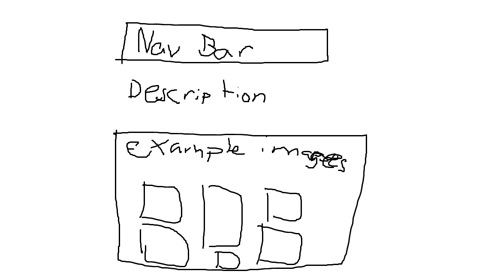
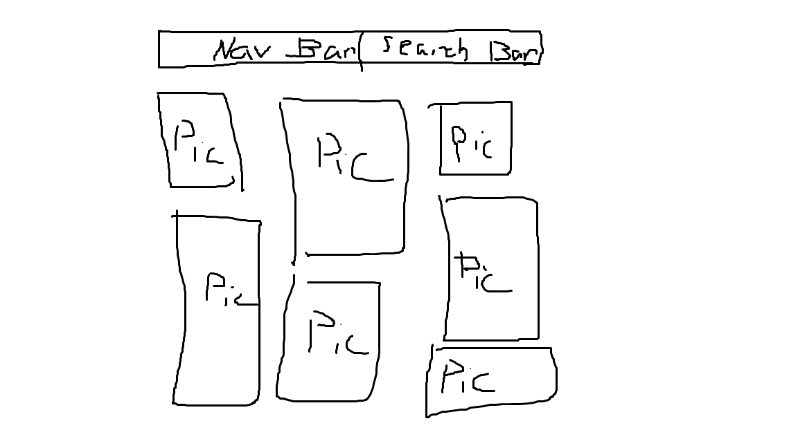

This portfolio shares highlights from my mission through three simple sections: people I met, food I ate, and places I explored. Each page offers a different perspective on my experience, from meaningful connections with individuals, to memorable meals, to unique locations that made an impact on me. Visitors can navigate between these sections to get a fuller picture of my journey, exploring stories, images, and moments that shaped my time. Whether you start with the people, the culture through food, or the places themselves, each path gives a different but connected view of the overall experience.

